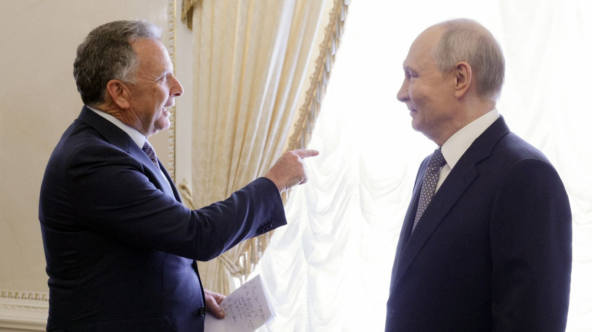
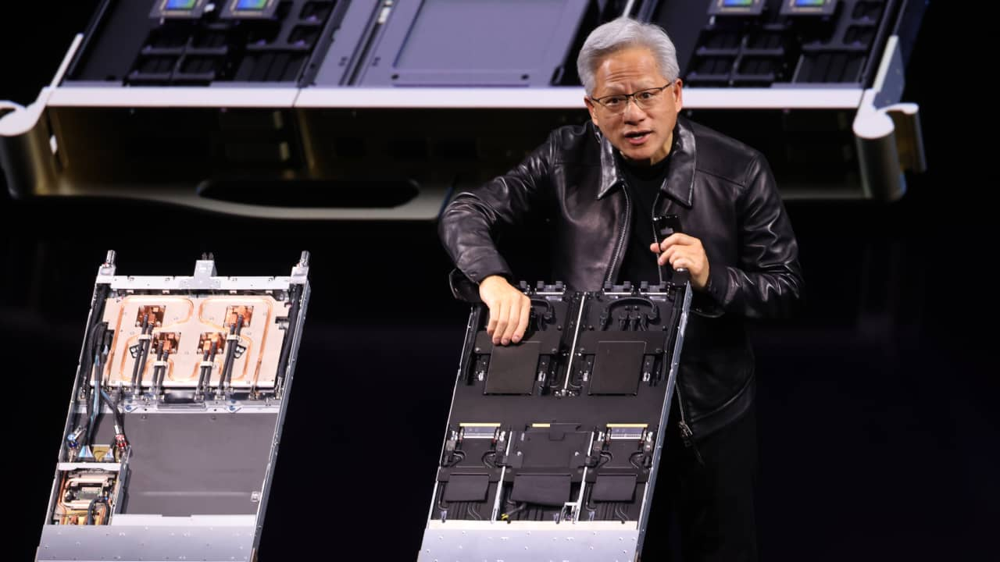
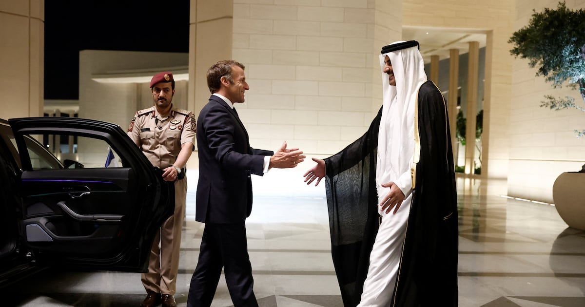
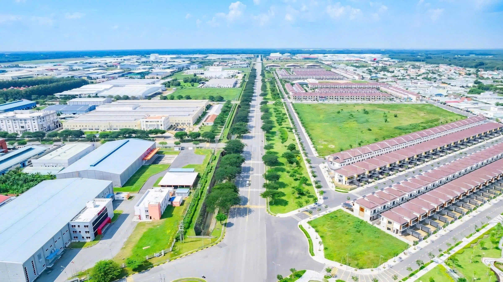

Daily briefing: 22 October 2026
- Putin agreed in principle to restart trilateral Ukraine talks around 10 November and pardoned an American detainee.
- Nvidia showed a truck-shippable block of seven Vera Rubin racks and booked more substrate, packaging and test capacity.
- Macron left the Gulf with winter LNG from Qatar and diesel pledges worth about a tenth of French use.
- Southern Vietnam's industrial parks took up 56% more land than a year ago, led by chips and data centres.
1. Russia will resume Ukraine talks around 10 November

After nearly three hours in St Petersburg, Putin told Witkoff that Russia is ready in principle to restart US–Russia–Ukraine talks around 10 November, on a security system for both sides once the war ends. Kremlin aide Yuri Ushakov told Russia 24 the round could be in Abu Dhabi. A US official said Kyiv had already accepted that technical-level meeting in Oslo.
Zelensky told Fox that freezing the current line is the realistic first step, followed by security guarantees, and that Moscow has walked away before. There is no sign Russia has moved on territory or NATO.
Putin pardoned Stephen Hubbard, 74, and handed him to Witkoff at Pulkovo airport; Trump said Russia asked for nothing in return. Ushakov said diesel sales are already moving after Washington lifted certain sanctions, and that a Trump–Putin–Xi meeting at the Shenzhen APEC summit has not been rejected by any of the three capitals.
2. Nvidia packs seven Vera Rubin racks into a truck

At GTC Berlin, the DSX Pod put seven Vera Rubin racks in a container of about 28 tonnes, with cabling and liquid cooling done at the factory. Nvidia says a site can be serving tokens in 14 days rather than six months. Foxconn, Gigabyte, Lenovo, HPE, Quanta and Pegatron are due to start deliveries in early 2027. Nvidia gave no price; analysts put one Vera Rubin rack above $7 million.
The same day Nvidia said substrate capacity should rise 2.5× within three years, Amkor's advanced packaging more than 300% by the end of 2028, with a $1.1 billion advance for new US test lines at KYEC and a 15× increase in SPIL optical engines by mid-2027.
Sources: CNBC, Nvidia press release
3. Macron brings back winter gas and diesel

In Doha, Macron said Qatar had guaranteed the equivalent of 2 TWh of LNG a month over the winter. Bahrain and the UAE each offered an extra 100,000 tonnes of diesel a month; with Saudi Arabia the package is about 295,000 tonnes a month, a little over 10% of France's usual diesel use. European diesel is trading near $200 a barrel.
His proposal to reopen Hormuz through international and Omani waters is still on the table, and he expects Iran's answer within days. After an unannounced stop in Riyadh, he said French personnel have been at the Yanbu pipeline for eight days. Houthi strikes on the capital's main airport have killed 17 people and injured more than 300. Qatar and France also called for Hormuz passage without restrictions or fees.
Sources: The National, Iran International
4. Southern Vietnam's industrial land fills on chips and data centres

CBRE figures published by VnExpress show southern primary industrial land take-up of 163 hectares in nine months, up 56% on a year earlier. Rent held at $185 per square metre for the remaining lease, flat on the quarter and up 1.5% on the year. In the enlarged Ho Chi Minh City, occupancy is about 70–73% across 25,000 hectares. The old city core is 93% full at $270 per square metre; old Bình Dương is 89% at $200; old Bà Rịa–Vũng Tàu is 82% at $140.
Coherent leased 30,000 m² of ready-built space at KTG Nhơn Trạch 2 for semiconductors, photonics and advanced materials. Daiwa House sold a 20,843 m² Long Đức warehouse to CJ Logistics. Saigon Hi-Tech Park booked more than $1.23 billion of new capital, including the Evolution data centre (about $509 million), Starmason (more than $480 million) and a 90 MW Sembcorp centre.
Developers face a cost gap: a new park costs more than $100/m² to develop in old Bình Dương and about $70 in Châu Đức. Separately, the National Assembly spent 22 October on the draft Land, Housing and Real Estate Business laws. They are still drafts and have not passed.